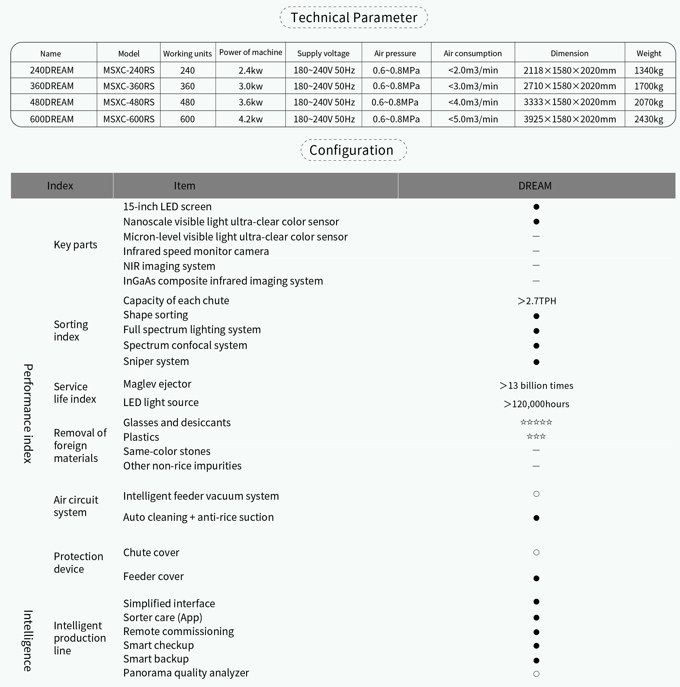
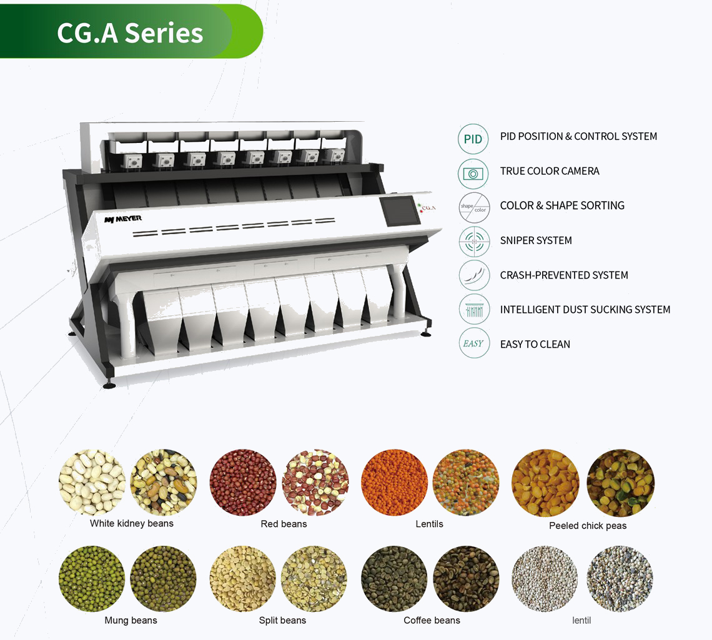

El clasificador de arroz por color Meyer, como máquina inteligente, puede detectar y eliminar arroz mohoso, arroz blanco, arroz partido y materias extrañas como vidrio en la materia prima y clasificar el arroz según el color, la forma y otras diferencias. La clasificadora de arroz por color Meyer siempre ofrece a los clientes soluciones de clasificación inteligentes, profesionales y completas, como la clasificación de arroz amarillo extremadamente claro, arroz de línea trasera, punta de aguja, arroz enfermo y arroz partido pequeño, y separación de arroz japonica y arroz índica. Al introducir una innovadora tecnología de detección en línea en la industria de procesamiento de arroz, Meyer llevará a la industria a una era nueva e inteligente.


DESCRIPCIÓN DEL PRODUCTO
El clasificador de color de frijol Meyer, como máquina inteligente, puede clasificar frijoles mungo, granos de café, lentejas, etc., detectar y eliminar materiales extraños como vidrio en la materia prima. El clasificador de color de frijol Meyer siempre brinda a los clientes soluciones de clasificación inteligentes, profesionales y completas. Al introducir una innovadora tecnología de detección en línea en la industria de procesamiento de frijoles, Meyer llevará a la industria a una era nueva e inteligente.